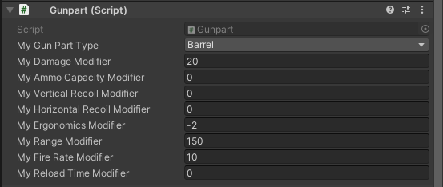

At The Game Assembly we have a course called the "Specialization" course where students get to work halftime for 5 weeks on a project of their own choosing. During this time we are also supposed to prepare a portfolio, cv and coverletter.
I chose to create a modular weapons system similar to the one in the game "Escape from Tarkov" in the Unity 3D engine. My primary goal was to have 7 modular slots that affect the performace of the weapon as a whole through attributes such as recoil, firerate, damage, etc. And to have a simple graphical interface to swap these modules in runtime and update the weapons stats accordingly.
Why I chose this as my specialization is because I wanted to make something focused on a gameplay feature but I also wanted it to include som ui elements as these are my favourite areas of programming currently. Also because I like the system from my reference and have had a lot of fun playing around with it!
I started out with planning and designing the primary structure of the project and created some empty interfaces to get a clearer picture of what needed to be done and how classes would interact.
After I had a good structural plan I began making a solid base for all parts of the project, mostly to be able to see if my structure would work as intended and be able to playtest as soon as possible, but I also find it nice to have all the parts in place so I can expand on them instead of working from nothing over and over again.
A side goal of mine was to make adding new modules to the system really user friendly and require minimal effort which led to spending a bit of time on rethinking desing choises and refactoring. But I feel like it worked out and i'm happy with how it turned out!

At the end of this project I would say I'm not completely satified as I would like to have polished much much more, but sadly I could not as I lost some time because of personal reasons.
I would also have liked to have attempted something a bit more challenging. This however dosen't mean I regret my chosen specialization as i still had a lot of fun doing it and learned a few new things along the way!
Something I really enjoyed was that I dove into the 3D modeling pipeline of unity by making my own simple models giving me a better understanding of the workflow of artists and how I could help them troubleshoot and/or improve custom pipelines in the future.